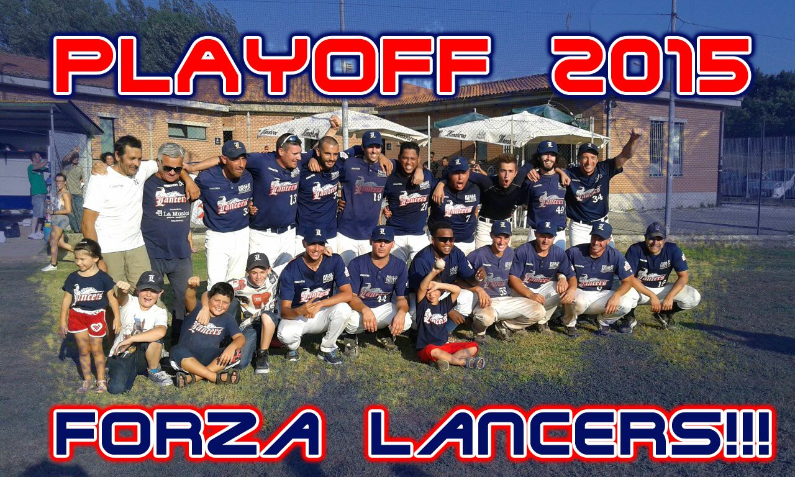

Ieri si è giocata la terzultima partita del girone e dopo un inizio incerto, la squadra lastrigiana ha avuto infine la meglio sulla seconda in classifica assicurandosi il passaggio del girone ai playoff.
Grande festa quando al settimo inning ( con la squadra lastrigiana già sopra di 10 punti ) con i due out su assitenza del terza base Albano e un out al volo splendido dell’esterno destro Graceffa, si sancisce la vittoria dei Lancers. Beh difficile spiegare la felicità di quel momento, in cui ogni giocatore guarda un proprio compagno e lo abbraccia, il pubblico esulta in maniera esaltante, invasione dei piccoli Lancers e delle tifose che quest’anno ci hanno davvero seguito e incoraggiato dappertutto: GRAZIE
La squadra merita questo. Un gruppo di giovani e ” meno giovani “. Quel mix di gioventù ed esperienza che quest’anno ha fatto la differenza:
– Bravo Manuele Becattini che ha fatto passi da gigante e si è reso un elemento in difesa insostituibile
– Eccellenti e favolosi i lanciatori Simone Baratella Daniele Lapini Matteo Vannuzzi e Simone Apata che quest’anno raramente hanno sbagliato partita e hanno sempre ( o quasi ) retto il peso del ruolo in assoluto più difficile del baseball. Qui un ringraziamento particolare al manager e pitching coach Daniele Ciappi che ha svolto un lavoro ottimo, aiutando i lanciatori non solo a crescere nella tecnica ma soprattutto nella testa
– Impeccabili gli interni Andrei Nicolae Pistol, che quest’anno in assoluto è quello che ha più sorpreso ed ha avuto il margine di miglioramento maggiore con svariati assistenze in prima e prese eccellenti; Giacomo Degl’innocenti che da sempre è uno dei migliori, se non il migliore, elementi in difesa con un guanto straordinario e un braccio da paura; Silvano Albano che ha sorpreso per un continuo carattere in campo e svolgendo bene il compito di terza base spronando tutti a dare il meglio
– applausi agli esterni Simone Geri, che oltre ad essere un guanto importante si è rilevato sulle basi il membro più veloce ed utile, Gabriele Nerbini, leggendario che ormai ha fatto la storia di questa squadra aiutando la squadra con la sua esperienza soprattutto in attacco, e Dario Graceffa che schierato per una serie di eventi, si è rivelato anch’egli un membro importante, superando quei limiti di testa che spesso hanno nascosto il suo potenziale tecnico elevato.
– un grazie ai nuovi arrivi Cristopher Diaz Lopez Lakry e Albert Ramos Lopez che in attacco hanno aiutato e non poco la squadra lastrigiana e che hanno aiutato anche a formare quel gruppo di cui tutti noi andiamo molto fieri ora; e a Marco Cicali che non sempre ha giocato ma ha aiutato il team a migliorare e a migliorarsi, sopratutto per quanto riguarda i lanciatori, Grazie Cica!!!
– ed un grazie speciale ai dirigenti accompagnatori che ci hanno seguito e aiutato, Luciano e Sacha Pascoski e non ci hanno mai fatto mancare nulla.
– infine ma non certo per importanza due grazie speciali. Uno al coach Roberto che ha fatto crescere quel gruppo di ragazzi degli anni 91/93/96 come dei figli portandoli a livelli alti spesso da solo e contro squadre che di allenatori ne avevamo 3 o 4… grazie Roby. Il secondo è rivolto al manager Paolo che ha preso quel gruppo di ragazzini, lo ha unito ai seniors che giá conosceva e li ha portati al livello di adesso, che è un livello che vuol dire PLAYOFF che non è poco.
GRAZIE, GRAZIE A TUTTI DAVVERO!
Ora però basta ringraziamenti. Godiamoci il momento. Ma non ci dobbiamo sentire soddisfatti. Il nostro obbiettivo lo abbiamo raggiunto. Adesso noi non abbiamo più nulla da perdere ma solo da guadagnare. Allora prepariamoci bene per questi playoff e giochiamo come sappiamo.
Nessuno ci deve spaventare: NOI SIAMO I LANCERS!